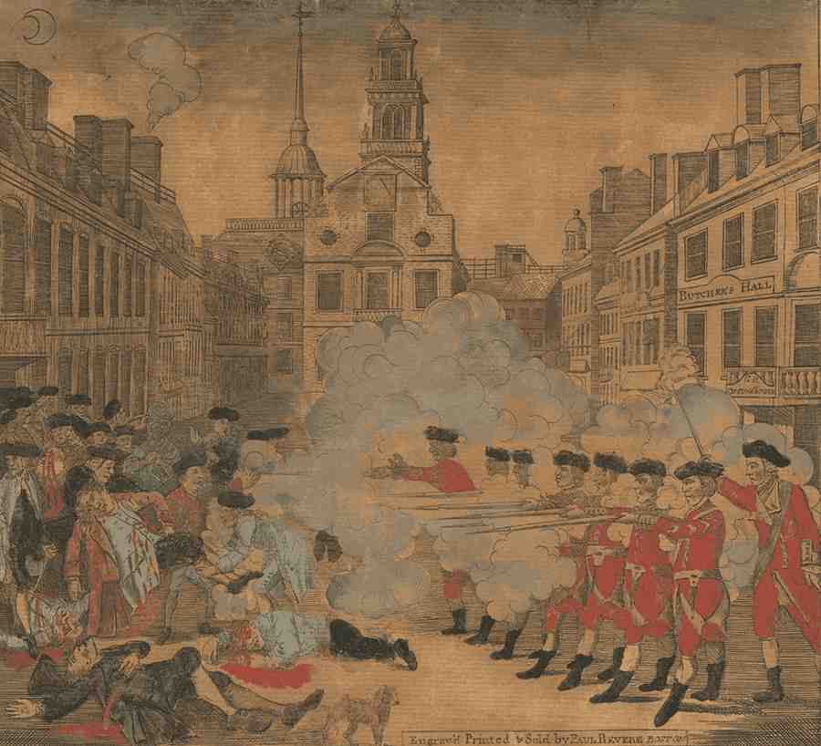
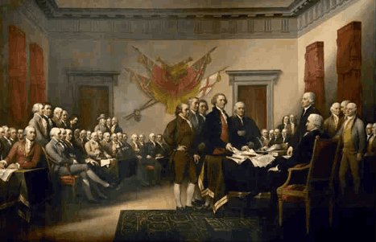

The American Revolution was the war between the thirteen American colonies against Great Britain. The American Revolution started in 1775 and ended in 1781 with the final British troops leaving American land, marking the colonies as the winner of the war.
After the french-indian war, Great Britain ended up severely in debt after the victory in the French-Indian war despite claiming Canada from them. To pay for this debt, the British Parliament passed several taxes imposed on the American colonies.
The Proclamation of 1763 was issued by King George III that kept colonists from settling west of the Appalachian Mountains. This benefitted Great Britain in many ways as this kept Native Americans from attacking the colonies and gave Britain more control over the colonists themselves.
The Sugar Act was enacted in April 5, 1764. The Sugar Act imposed a tax on sugar and molasses intended to raise money to pay for the debt. This also gave British officers legal authority to seize goods from accused smugglers without going to court. The Sugar Act enraged many colonists for many reasons, one because it violated their rights and security in their homes.
The Currency Act was passed by the British Parliament in April 15, 1764. The Currency Act banned american colonists from creating their own currency to keep British merchants from being paid in worthless currency.
Writs of Assistance were search warrants that gave British officers permission to enter almost anywhere, often to search for smuggled goods without going to court. Colonists were angry at the currency act as their economical system was now controlled by the parliament itself.
The Stamp Act was the 2nd act passed by the British Parliament on March 22, 1765. Colonists were required to purchase specially stamped papers, legal documents, playing cards, dice, newspapers, etc. The Stamp Act caused an outrage on the colonies, many with cries of "No Taxes Without Representation" and boycotted stamped papers which led to the act's repealment the next year.
The Quartering Act was the 3rd act passed by the British Parliament on March 24, 1765. This act forced colonists to house British soldiers and provide them with food, water, remedies, etc. This angered the colonists even more because their rights were violated as they were forced to quarter soldiers without their consent.
After the repealment of the Stamp Act, the Declaratory Act was passed by the British Parliament on the same day. It stated to colonists that the British Parliament could make laws imposed on the colonies "in all cases whatsoever". This told the colonists that the parliament could have total authority over the laws that affect the colonies, essentially removing the colonists right to disprove of or prevent whatsoever.
The Townshend Acts were a group of laws all passed by the Parliament between June to July 1767. Their purpose was to raise funds for the debt and to strength Great Britain's control over the colonies. These acts imposed taxes on glass, lead, paint, paper, and tea. In response to these new taxes, colonists avoided purchasing British imports. Due to colonists avoidance of British imports, the profits of the taxes decreased which led to the repealment of the taxes of Townshend Acts, except for the tax on tea in 1770.
The Tea Act, passed by the Parliament on May 10, 1773 was to help rescue the declining British East India Tea Company. This act allowed the company to directly ship tea to the colonies, unlike the other act, the Tea Act wasn't purposed to raise revenue, but to make the British East India Tea Company a monopoly for tea trade to the colonies.
The Coercive Acts or the Intolerable Acts are a series of laws passed by the Parliament in 1774 as a way to punish the colonists, especially Massachusetts. One of the acts closed the Boston Harbor. Another act applied to all colonies that expanded upon the Quartering Act which stated that British soldiers had to live among colonists now. A third act, banned town meetings in Massachusetts.
The Boston Massacre was an attack by British soldiers on Bostonians on March 5, 1770. It had occured due to the growing tensions between the colonists and the British due to the many taxes they imposed on them. The Boston Massacre started as some Bostonians and soldiers started a fight with each other. The scene quickly escalated as more and more people joined the fight and threw sticks and stones at them. After someone dared the redcoats to fire, the redcoats, provoked, fired at the crowd, killing five people, one being Cripus Attucks, a dockworker who was mixed-raced as he was both African and Native American, the first person to get killed by the redcoats. Colonists then called the incident, "The Boston Massacre" or sometimes "The Bloody Massacre". Now the Boston Massacre wasn't exactly a massacre, but news of it rapidly spread across the colonies and many colonial leaders like Paul Revere used it as propaganda, or news that was used to promote a cause, with The Boston Massacre, they used it to help unify the colonists for independence and tried to make the British seem tyrannical. The image on the right is an engraving of The Boston Massacre by Paul Revere.
The Boston Tea Party was the event where a group of colonists, dressed as Indians, threw 342 chests of tea overboard and into the sea, or estimated to be $1.7 million. In response of the Boston Tea Party, the Parliament passed the Coercive Acts or the Intolerable Acts called by the colonists.

In response of the Intolerable Acts passed by the Parliament to punish the colonies, the first Continental Congress had taken place, requested by the colonists. It was the meeting of 56 delagates from 12 out of the 13 colonies in America starting on September 5, 1774 at Carptenders' Hall. Some of these delagates became presidents or popular American politicians of the United States including George Washington, John Adams, Patrick Henry, Samual Adams, and John Sullivan. The delagates there discussed about how the colonists would respond to the multiple taxes and punishments the British have enacted towards them. They also passed the Sullfolk Resolves which were 19 resolutions that critized the Intolerable Acts. The first Continental Congress would end a month later on October 26, 1774.
The Battles of Lexington and Concord were the first millitary battles between the colonists and the British. The British wanted to destroy all American ammunition and artilery at Concord commanded by British general Thomas Gage. As soon as the colonists knew about this, the Boston Committee of Safety sent Paul Revere and William Dawes to spread the news of Great Britain's attack to minutemen and colonists on the countryside. On April 19, 1775, 70 minutemen, led by John Parker met hundreds of British soldiers, led by Lieutenant Colonel Francis Smith. in Lexington. The minutemen, being outnumbered compared to the British soldiers were about to retreat decided to surrender to the British, but a stray shot from either side had fired, called the "Shot heard 'round the world", this shot being the first. After the first shot, both sides started firing at the other, the British firing the majority of the bullets. As a result, eight minutemen died and ten more were injured, while one redcoat was injured.
As the redcoats arrive at Concord, some burned weapons they found there, but others met with minutemen at North Bridge. The minutemen fired at the British, killing many redcoats. The British then retreated to Boston, many colonists employed Guerilla Warfare where they would make suprise attacks at far distances and ran. By the time the British had arrived at Boston, 73 soldiers were dead and 174 were injured. With these two battles taking place, the war for independence had begun.
Following the battles of Lexington and Concord, the second Continental Congress had formed in May 10, 1775. The delagates from 12 out of the (soon all) thirdteen colonies met in Philadelphia, Pennsylvania. Unlike the first Continental Congress which focused on the taxes that the Parliaments enforced, the second was much more focused around government and the transition of the colonies from being under British rule to fighting to be free of British rule.
The Second Continental Congress also in response to the battles of Lexington and Concord formed The Continental Army. This was to coordinate militias and troops against the British as one army with George Washington of Virginia appointed as the Commander-in-Chief, who would later become the first U.S president. The Second Continental Army was the first national army of the United States and significantly contributed to colonial efforts as it won important battles for the colonies, but the army wasn't meant to be permanent, as by the Treaty of Paris in 1783, The Continental Army was disbanded.

As the redcoats gather and are led by British General Thomas Gage march to Boston to attack on the morning of June 17, 1775, the colonists ended up fighting the British three times. The first and second encounters, the colonists managed to make the redcoats retreat, but on the third time, the British overpowered the colonists and captured Breed's hill, forcing them to surrender. The Battle of Bunker Hill was won by the British, but they learned that the colonists won't be so easy and quick to defeat. More than a 1,000 British soldiers including 89 officers died in the battle, more than the amount of dead colonists, which was roughly half of the British deaths.
Fun Fact: The Battle of Bunker Hill didn't take place on "Bunker Hill", the battle actually took place on Breed's Hill
As the revolutionary war was happening, the colonists divided into two groups, The Patriots and The Loyalists. Patriots were colonists who supported independence and fought for it. Many patriots fought directly and indirectly as some of them joined in the battles with The Continental Army, others ambushed and attacked British soldiers with suprise attacks. Loyalists however opposed the fighting and thought of themselves as loyal British citizens. Loyalists often sided with the British, fighting alongside them or forming militias to hunt down patriots. Patriots often harass loyalists by seizing property and tarring them. This split made the American Revolution also a civil war for independence.
The colonists wanted support for the American cause, north in Canada. In the morning of, New Year's Eve, patriot forces, led by Colonel Benedict Arnold and General Richard Montgomery traveled to Quebec. Upon arriving, the British opened fire with artilery and firearms at Montgomery's army, killing him and several other soldiers before his group had to retreat. Arnold's army also was forced to retreat as the British opened fire onto his army, injuring Arnold and killing many other troops. There, the patriots waited for and recieved reinforcements but ultimately didn't decide to attack. The patriots stayed at Quebec until the April of 1776 where a British fleet forced them to retreat from the area. The Battle of Quebec resulted in a British victory as 400 colonists were either captured, killed, or wounded, while some British died, making this battle as the first significant loss for the patriots.
During the battle, Great Britain hired mercenaries to assist British soldiers. The patriots called these mercenaries, "Hessians", named after the country, Germany, as most of these mercenaries came from. Hessians were not paid for battling the colonists but were promised free land from the British. Hessians significantly impacted the revolutionary war as their support for the British helped them win many important victories.
After the Second Continental Congress, on June 7, 1776, Richard Lee of Virginia states a resolution to the dilemma that should the colonies should stay in British rule or break free...
"that these united colonies are and of right ought to be free and independent states."
After Lee's statement, the delagates had divided opinions. Some disagreed and thought that the colonies should remain with Great Britain. Others agreed, saying that the war with Britain had already begun and the colonies should break free from their rule.
While Congress debated on Lee's resolution, it had chose committees to write a declaration of independence to Britain. Among these committees were Benjamin Franklin, John Adams, Robert Livingston, Roger Sherman, and Thomas Jefferson, making up the Committee of Five. On June 11, 1776, Thomas Jefferson began to write. He used ideas and beliefs from John Locke, an English philosopher. On July 2, 1776, Congress voted to decide for independence. Twelve colonies voted in favor of independence, New York didn't vote, yet supported it later. Two days later on July 4, 1776, the declaration of independence was ratified by Congress and was signed first by John Hancock with his name written big at the bottom of the paper and with the other 56 delagates signing as well, officially making the colonies the United States of America. With the approving of the draft, it was copied and sent out to many people in the United States and over in Britain to King George III. Washington soon read it to his army on July 9th in New York City. The now newly Americans celebrated their independence while the British didn't like the declaration of independence as they ridiculed then for their "unjust declaration" and "misguidence".
The British realized, the battle before the Battle of Bunker Hill, that they needed more troops as maybe a much higher amount of soldiers would intimitate the Americans enough to where they would surrender. So on the Summer of 1776, Britain deployed over 30,000 troops under British General William Howe, marking the beginning of the British Campaign of 1776. Washington's Army, in the August of 1776, had grown to about 20,000 soldiers. But the army encountered Howe and his army in the 27th of August. Despite being badly outnumbered, the patriots still fought against the British but lost the battle. The majority of the Americans in the battle were dead as only under 5,000 patriots were left and New York City was captured by the British. Washington fled from New York City to White Plains in New York, but was followed by Howe and had to travel further, across New Jersey and into Pennsylvania where the British let him go.
After the Battle of Long Island, Washington's army had less than 5,000 soldiers, and winter was approching. Washington begged the Continental Congress for more troops and even suggested bringing African Americans into the patriots cause. But this suggestion was opposed by many Americans as they feared that giving weapons to African Americans could result in a rebellion against the whites. But Washington had an idea to strike against the British after knowing that some British soldiers had stayed in Trenton and Princeton. On December 25, 1776, at night, Washington led 2,400 across the icy Delware River and ambushed the army at Trenton led by Colonel Johnann Rall the next day. In the morning of December 26, 1776, Washington fired artilery at Rall's army, suprised, the army tried to fight back but a bullet killed Rall and the British soldiers surrendered. Then on Janurary 3, 1777, Washington arrived at Princeton and fought 8,000 Hessian and British troops with only 7,000 troops. The battle resulted in the British surrendering to the Americans.
In the September of 1777, the British had a plan to capture Philadelphia. This plan was called the Philadelphia Campaign. It first had British General John Burgoyne send troops from Canada (south) to attack Albany, a second military leader, British Lieutenant Colonel Barry St. Leger would move his troops from the east, then Howe's Army would move up North, essentially surrounding the patriots at Albany. After the British led by Howe won in the Battle of Brandywine, Washington decided to leave Philadelphia to protect the resources that were left. Howe's army then entered and captured Philadelphia. Howe was supposed to travel to Albany but instead stayed at Philadelphia as winter conditions were starting to show. The capturing of Philadelphia was a key British victory as the Continental Congress was forced to flee from the city, but only lasted for a several months until June 1778, when they abandoned the city due to severe winter conditions.
The Battle of Saratoga was the main turning point in the war. The Philadelphia Campaign planned by the British was starting to fail, Burgoyne's army still wasn't at Albany and needed supplies after taking over Fort Ticonderoga. He met a local militia group called the Green Mountain Boys and was defeated by them. Burgoyne then fled to Saratoga, New York where American soldiers under General Horatio Gates surrounded his army. Howe's army was still in Philadelphia and St. Leger was halted by American soldiers under Benedict Arnold. The Battle of Saratoga resulted in the surrendering of Burgoyne on October 17, 1777.
During the winter of 1777 - 1778, Howe's army was still in Philadelphia while Washington's army was setting up camp in Valley Forge. The winter of 1777 - 1778 was brutal on the Continental Army. Most soldiers didn't have proper clothing to protect themselves from the cold. The army also lacked of food, water, medicine, and shelter, and also some were deserting the battle. In addition, diseases were spreading around during the Winter of 1777 - 1778 like Smallpox which killed even more people.
But as the Spring of 1788 came, conditions improved. Winter conditions were less severe, new people were recruited, and Washington shared with his army about France's aid in the war.
The United States needed allies and support from foreign countries. Many reasons why were that the United State's navy was considerably weak compared to the British navy, that was the strongest navy in the world. First the states established an alliance with France on Feburary 6, 1778 by signing the Treaty of Aliance and the Treaty of Amity and Commerce. After the patriot's victory in the Battle of Saratoga, France could see the possibility that the United States could be free from British rule. The United States also received help from Spain, but unlike France didn't form an alliance with them and was mainly indirect as they fought the British seperately from the Americans, but they brought many British soldiers out of the battle between the patriots. The Americans ended up forming a military alliance with French General Maquis de Lafayette.
Meanwhile in the Westerrn parts of the United States, the patriots also had to deal with Native Americans. Native American Tribes were divided on their opinions of the patriots. Most sided with the British as the Americans intruded on their land originally. Some remained neutral, or didn't side with the British nor the Americans. But a small number sided with the patriots because of promises for peace and were against certain British policies. Many Native-Americans fought and killed patriots and won battles alongside the British. In the south, the British also had support. The south also was involved in the revolutionary war as Britain needed support from loyalists in the south, called the Southern Strategy. Unforntunately for the British, the loyalist support wasn't enough and the Southern Strategy ended up failing.
The Battle of Yorktown (also called the Siege of Yorktown) was the last significant battle between the patriots and the British. British General Lord Charles Cornwallis had set up a fort in Yorktown, Virginia. Cornwallis expected backup from the British navy but instead French navy came and blocked his army. Washington and French soldiers under Jean-Baptiste Donatien de Vimeur comte de Rochambeau had marched to the sides of Cornwallis's fort and essentially blocked them from escaping, called a siege, hoping that Cornwallis would surrender. The American and French forces waited for the British to eventually surrender and slowly, Cornwallis's army was getting sick and were low on supplies. The patriots eventually attacked Cornwallis's army and ultimately won the battle, Cornwallis surrendered on October 17, 1781 and many British soldiers were captured by the patriots. After Cornwallis's defeat, the British saw the war as too expensive and pointless to keep going.
Almost two years after the Battle of Yorktown, the British and the Americans finally decided to form a peace treaty. Representatives from both countries traveled to Paris to sign The Treaty of Paris. The treaty recognized the 13 colonies as independent from the British and established peace for Britain, The United States, France and Spain. The treaty also gave the United States permission to expand west up to the Mississippi River.
However, even after the Treaty of Paris was signed, battles between the British and the Americans still happened. But in September 1783, the last British troops left American land.